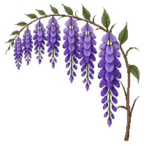

Japanese Wisteria
Wisteria floribunda 'Macrobotrys'

Japanese Wisteria is a climber for focal point, structure, suited to full sun and clay or loam, flowering May, Jun.
| Type | Climber |
|---|---|
| Mature height | 800 cm |
| Spread | 500 cm |
| Aspect | full sun |
| Foliage | Deciduous |
| Hardiness | USDA 5b-9a, RHS H6 |
| Pollinator-friendly | Yes |
| Pet-safe | No |
Where to use it in a border
At around 800 cm, it sits best toward the back of a border, or on its own as a focal point with room around it. Give it about 500 cm of room to spread. It is hardy across USDA zones 5b to 9a and rated H6 by the RHS, so check it suits your area before planting.
It appears in our lists of full sun, clay soil, pollinator-friendly plants.
Flowering through the year
JFMAMJJASOND
Worth knowing
- Not recorded as pet-safe; site it away from pets that graze if that matters to you.
- Its flowers are valued by bees and other pollinators.
Good companions
Plants that share its conditions and style, chosen to complement its place in the border:
- Black mondo grassto edge in front
- False spiraeato edge in front
- Flowering Quinceto edge in front
- Heavenly Bambooto edge in front
- Hostato edge in front
- Hydrangea 'Endless Summer'to edge in front
Garden styles
Versatile across planting styles.
See Japanese Wisteria set in a full border, with spacing and companions worked out for your own conditions, in Border Builder.